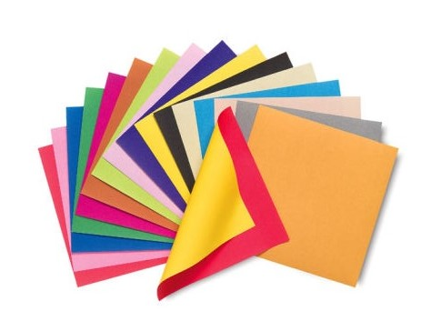
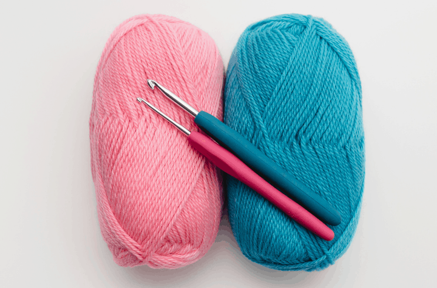

Alexandra's Museum
This is a website dedicated to displaying all of my favorite crafts and projects, focusing on my origami models and crocheted works. I hope you enjoy it!

Origami, as you may know, is the art of paper folding. All of the origami models displayed here use no glue, and are made with one solid square piece of paper that has not been cut.

For my crochet projects, I will be displaying a few different granny squares. Some will be made in white, using only one strand of yarn, while others will be more colorful.